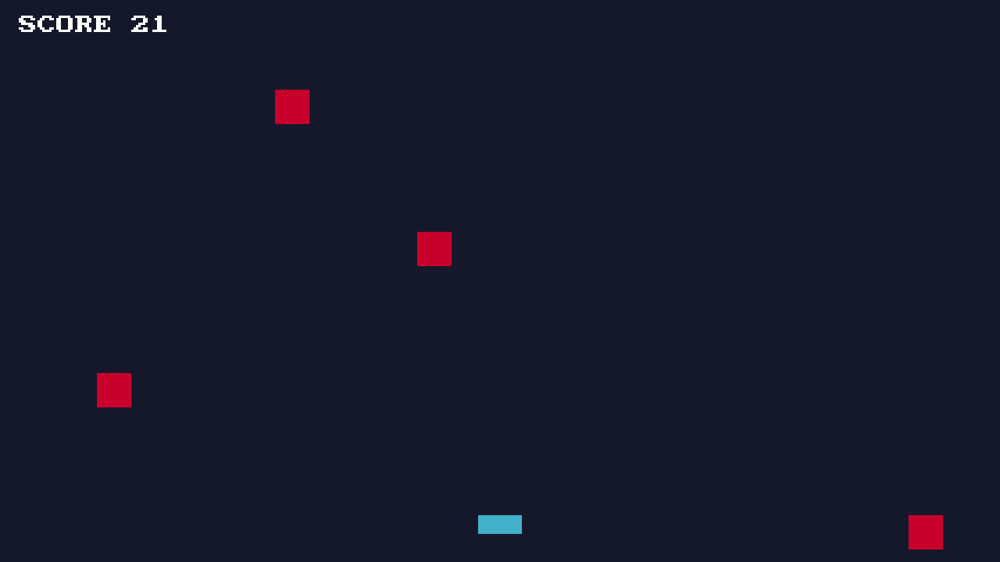
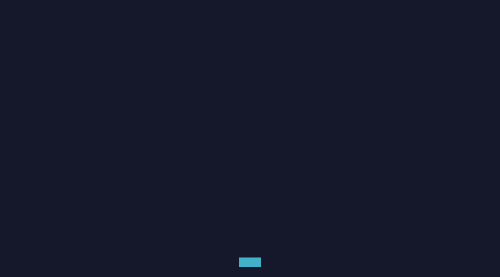
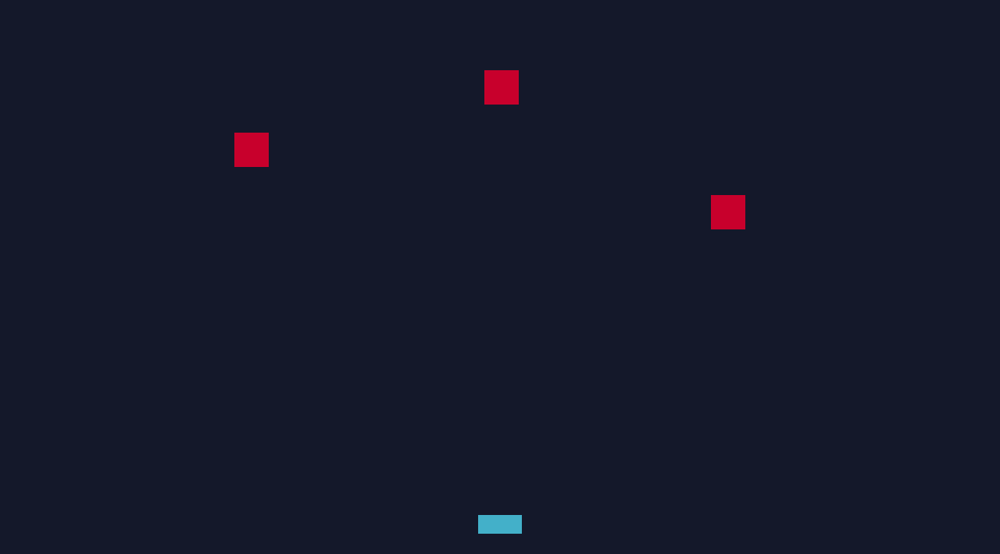
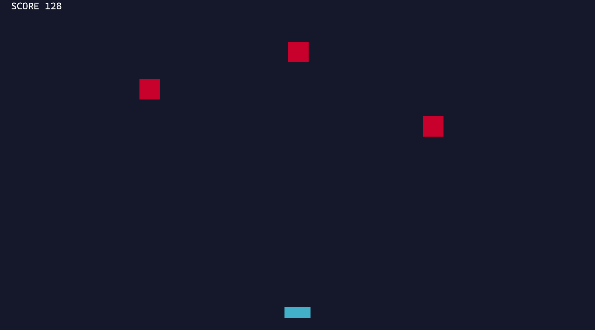
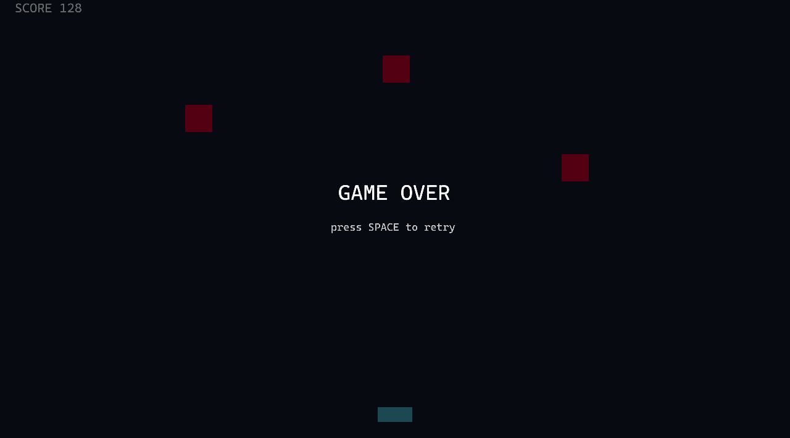
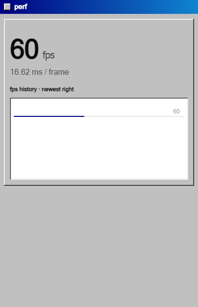
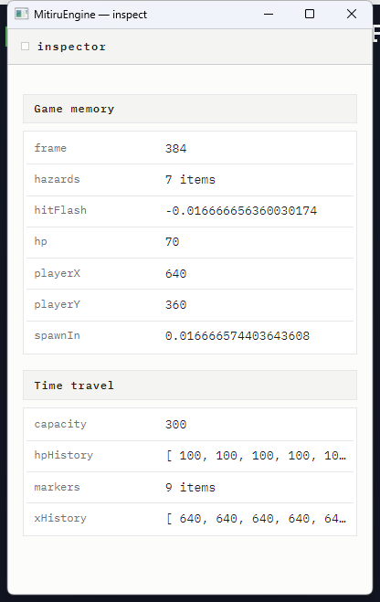
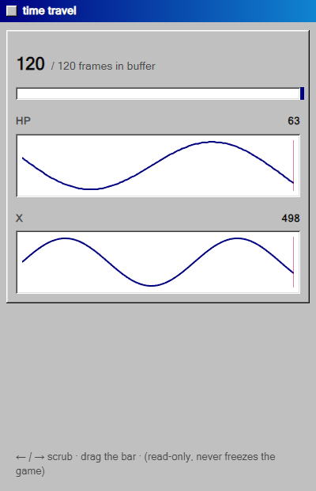
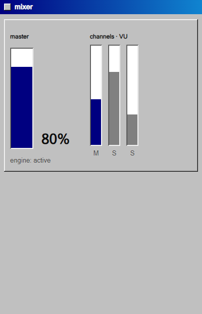
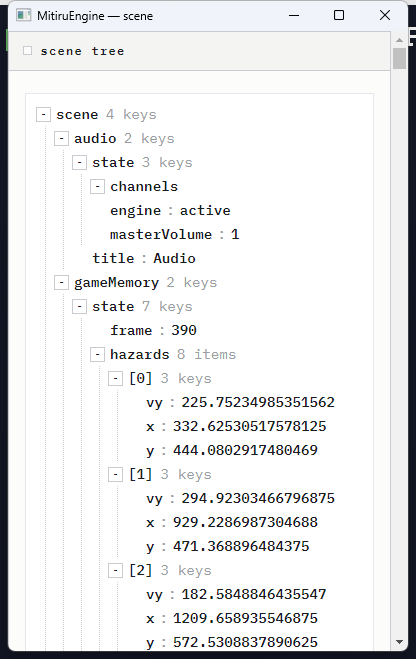

TUTORIAL
はじめてのゲーム
この 1 本で「ドッジゲーム」を作ります。落ちてくるブロックを左右に動いてよけるだけの単純なゲームです。覚えるのは struct・update・draw の 3 つだけ。書く → 動かす → 観察する → 直す、という本物の開発ループをそのままなぞります。読み終わる頃には、自分のゲームを作る土台ができています。
作るもの — ドッジゲーム
落ちてくる赤いブロックを、下の水色の自機でよけるだけのゲームです。画面の文字も四角も、全部 C++ で描きます。まずは完成形を見てください。

draw が描いたもの。mitiru new my-dodge で作る自分のプロジェクトです。同梱サンプルを動かすのではなく、空のひな型から自分で書き上げます。開発の流れ — 4 ステップのくり返し
ゲーム開発は「書く → 動かす → 確かめる → 直す」のくり返しです。MitiruEngine はこのループを速く回せます。
① 作るnew
mitiru new でプロジェクトのひな型を作る。C++ ファイルが 1 つあるだけのシンプルな構成。
② 動かすwatch
mitiru watch で起動。コードを保存した瞬間、ゲームを止めずに反映（ホットリロード）。
③ 観察するinspect
mitiru run --inspect perf で別ウィンドウを開き、fps などを見ながら作る。
④ 直すiterate
数字や条件を変えて保存 → すぐ②に戻る。このループを何度も回してゲームを育てる。
考え方 — ゲームは 3 つでできている
どんなゲームも、だいたいこの 3 つの組み合わせでできています。
状態を持つstruct
自機の位置・スコア・ブロックの場所など「いまどうなっているか」を 1 つの struct にまとめて持つ。
動かすupdate
毎フレーム呼ばれる関数。キー入力を読んで自機を動かし、ブロックを落とし、当たり判定をする。
描くdraw
毎フレーム呼ばれる関数。いまの状態を見て、四角や文字を画面に描く。
エンジンが毎フレーム、自動でこのループを回します:
入力 (キー・マウス) │ ▼ update(in, dt) // 状態を進める ← あなたが書く │ ▼ 状態 (struct DodgeGame) │ ▼ draw(s) // 状態を描く ← あなたが書く │ ▼ 画面 (1280 × 720) ↺ 1 秒に約 60 回くり返す
あなたが書くのは update と draw の 2 つの中身だけ。残りはエンジンの仕事です。状態を struct に置いて、update で動かして、draw で描く — どんなゲームもこの 3 つの組み合わせです。
Step 1 — プロジェクトを作る
mitiru new my-dodge cd my-dodge
mitiru new を実行すると、my-dodge/ の中にプロジェクトのひな型ができます。書き換えるのは src/main.cpp ただ 1 つ。最初の数行はこう書きはじめます。using namespace mitiru; と書いておくと、Key や color を短く書けます。
#include <string> #include <mitiru/module/Game.hpp> // ゲームの入口・Input・Hud・Screen・色 #include <mitiru/core/Random.hpp> // 乱数 mitiru::Random using namespace mitiru;
mitiru::Random。 Random rng; と置いて rng.nextInt(1, 6) / rng.nextFloat(0, 1) / rng.nextBool(0.3f) のように使います。このゲームでもブロックを出す位置決めに使います。Step 2 — 状態を struct に書く
このゲームが覚えておくのは「自機の位置」「落ちてくるブロック」「スコア」など。全部 1 つの struct に入れます。乱数の rng もメンバとして持っておきます。
// 落ちてくるブロック 1 個分 struct Block { float x, y; bool alive; }; struct DodgeGame { float playerX = 640; // 自機の左右位置 Block blocks[24] {}; // ブロックは最大 24 個（全部 alive=false で開始） int score = 0; bool over = false; // ゲームオーバーか float spawnIn = 0.0f; // 次のブロックを出すまでの残り秒 Random rng; // 乱数（エンジン付属） // ↓ update / draw はこの下に書く };
ポイント: 状態をこの 1 つの struct にまとめておくと、エンジンがこれを預かってくれます。だから後で「コードを書き換えても状態は保ったまま」「プレイを録画して再生」「過去に巻き戻す」といった便利機能がそのまま使えます（今は気にしなくて OK）。
なぜ class じゃなく struct? C++ では両者はほぼ同じ（既定の公開／非公開が違うだけ）で、struct でもメンバ関数（update／draw）は持てます。ここで struct なのにはエンジンの仕組み上の理由があります。エンジンはこのゲーム状態をまるごとコピーして保存／復元します（タイムトラベルやホットリロード）。そのためトップのゲーム状態は「ただのデータ」＝仮想関数やエンジンへのポインタを持たない、コピーできる素直な型（flat POD）であってほしい。struct はその「これは素のデータ」という意思表示です。中で使う部品（敵・弾・UI など）は普通に class で書いて構いません — トップの状態だけ素直に保つ、という住み分けです。
Step 3 — 動かす（update）を書く
毎フレーム呼ばれます。in から入力を読み、dt（前フレームからの経過秒）を使って動かします。やることは 3 つ — ① 自機を動かす ② ときどきブロックを出す ③ ブロックを落として当たり判定。struct のメンバ関数として書きます。
void update(Input in, float dt) { if (over) { // ゲームオーバー中は Space で再開だけ if (in.pressed(Key::Space)) { *this = DodgeGame{}; } return; } // ① 矢印キーで自機を左右に（画面外に出ないよう制限） if (in.down(Key::Left)) playerX -= 520 * dt; if (in.down(Key::Right)) playerX += 520 * dt; if (playerX < 28) playerX = 28; if (playerX > 1252) playerX = 1252; // ② 0.55 秒ごとに、空いている枠へ新しいブロックを上から出す spawnIn -= dt; if (spawnIn <= 0) { spawnIn = 0.55f; for (Block& b : blocks) if (!b.alive) { b.alive = true; b.x = rng.nextFloat(40, 1200); b.y = -44; break; } } // ③ ブロックを落として、自機に当たったか調べる for (Block& b : blocks) { if (!b.alive) continue; b.y += 330 * dt; // 下へ落とす if (b.y > 720) { b.alive = false; continue; } // 下に抜けたら消す // 当たり判定はエンジンに任せる sgc::Rectf player{playerX - 28, 660, 56, 24}; // {x, y, 幅, 高さ} sgc::Rectf block{b.x, b.y, 44, 44}; if (player.intersects(block)) over = true; } score += 1; // 生き残るほどスコアが増える }
入力の読み方: in.down(Key::Left) は「押されている間ずっと true」、in.pressed(Key::Space) は「押した瞬間だけ true」。キーは名前で書けます。
ブロックを出す: blocks は最大 24 個の置き場。空いている（!alive）枠を 1 つ見つけて alive = true にし、出現 x を rng.nextFloat(40, 1200) でランダムに決めます。やり直しは *this = DodgeGame{};（状態をまるごと初期値に戻す）の 1 行で済みます。
当たり判定はエンジンが持っています。 四角どうしが重なったかは sgc::Rectf（{x, y, 幅, 高さ}）の .intersects(他の矩形) で一発。点が矩形の中にあるかは .contains(点)。
Step 4 — 描く（draw）を書く
毎フレーム呼ばれます。s（画面）に四角と文字を描きます。座標は左上が (0, 0)、右下が (1280, 720) です。
void draw(Screen& s) { s.drawRect(0, 0, 1280, 720, hex(0x14182A)); // 背景を塗る for (Block& b : blocks) // ブロック (赤い四角) if (b.alive) s.drawRect(b.x, b.y, 44, 44, color::Red); s.drawRectCentered(playerX, 672, 56, 24, color::Cyan); // 自機 (水色) // スコアを文字で描く — まだ HTML は使いません s.text("SCORE " + std::to_string(score), 24, 20, color::White, 24); if (over) { // ゲームオーバー表示 s.text("GAME OVER", 548, 324, color::White, 40); s.text("press SPACE to retry", 536, 374, color::Gray, 20); } }
描き方: s.drawRect(x, y, 幅, 高さ, 色) で四角、s.text("文字", x, y, 色, 大きさ) で文字。色は color::Red のような名前か、hex(0x14182A) のように 16 進で書けます。drawRectCentered は (x, y) を中心にして描く版です。
コードを足すごとに、画面はこう育ちます（下はすべて、上で書いた draw を実際に動かして撮った画面です）:

drawRect / drawRectCentered
drawRect（赤）
s.text(...)
if (over) { ... }Step 5 — 仕上げて動かす
最後に 1 行、このゲームを DLL の入口に結びつけます。
MITIRU_GAME(DodgeGame) // これだけ
MITIRU_GAME って何をしてるの? MitiruEngine では、書いたゲームは DLL（差し替え可能な部品）としてビルドされ、mitiru_host という実行ファイルがそれを読み込んで動かします。ホストとゲームの間は「ここを呼んでね」という決まった入口関数でやり取りします。MITIRU_GAME(DodgeGame) は、その入口関数を自動で書いてくれるマクロです。中では「DodgeGame を 1 個作って、毎フレーム update と draw を呼んでね」という配線が展開されます。だから書くのは update と draw だけでよく、面倒な入口の決まり文句（C の関数シグネチャや extern "C" など）は一切書かずに済みます。この「ゲーム＝差し替え可能な DLL」という形が、次に出てくるホットリロードを可能にしています。
mitiru run
窓が開いて、ゲームが動きます。矢印キーで自機を動かして、赤いブロックをよけてみてください。
ホットリロード — 止めずにコードを差し替える
mitiru run の代わりに mitiru watch で起動してみてください。すると、src/ のコードを保存した瞬間に、ゲームを止めずに新しいコードへ差し替わります。これをホットリロードと呼びます。
mitiru watch # 保存するたびに、止めずに反映
仕組みはこうです。コードを保存すると、ゲームの DLL だけが素早く再ビルドされ（数秒）、走っている mitiru_host がそれをその場で差し替えます。ホストは再起動しないので、いまの状態（スコア・ブロックの位置など）はそのまま残ります。「作り直して最初から」ではなく「遊んだまま中身だけ入れ替わる」のがホットリロードです。状態が消えないのは、状態を struct DodgeGame にまとめてエンジンが預かっているからです。
試しに mitiru watch 中に、ブロックの落下速度 330 を 500 に変えて保存してみましょう。ゲームは落ちずに、その場で難しくなります。
| 再起動して直す | 直す → ビルド → 再起動 → 場面を作り直して確認。状態が消える（スコアは 0、ブロックも無し）。さっき確かめたかった場面まで、もう一度遊んで戻るところから。 |
| mitiru watch | 直して保存 → 数秒で差し替え → そのまま続行。状態はそのまま。スコアもブロックの位置も残ったまま、変えた数字（落下速度）だけが効く。 |
draw が描いたもの。全コード — このまま貼れば動く
ここまでの Step 1〜4 を 1 つにまとめたそのまま遊べる全コードです。src/main.cpp を丸ごとこれに置き換えて mitiru run。新しい行は 1 つもありません — 上のステップで書いたものを順に並べただけです。
#include <string> #include <mitiru/module/Game.hpp> // ゲームの入口・Input・Hud・Screen・色 #include <mitiru/core/Random.hpp> // 乱数（エンジン付属） using namespace mitiru; // 落ちてくるブロック 1 個分 struct Block { float x, y; bool alive; }; struct DodgeGame { float playerX = 640; // 自機の左右位置 Block blocks[24] {}; // ブロックは最大 24 個 int score = 0; bool over = false; // ゲームオーバーか float spawnIn = 0.0f; // 次のブロックを出すまでの残り秒 Random rng; // 乱数（エンジン付属） void update(Input in, float dt) { if (over) { // ゲームオーバー中は Space で再開だけ if (in.pressed(Key::Space)) { *this = DodgeGame{}; } return; } // ① 矢印キーで自機を左右に（画面外に出ない） if (in.down(Key::Left)) playerX -= 520 * dt; if (in.down(Key::Right)) playerX += 520 * dt; if (playerX < 28) playerX = 28; if (playerX > 1252) playerX = 1252; // ② 0.55 秒ごとに、空いている枠へブロックを上から出す spawnIn -= dt; if (spawnIn <= 0) { spawnIn = 0.55f; for (Block& b : blocks) if (!b.alive) { b.alive = true; b.x = rng.nextFloat(40, 1200); b.y = -44; break; } } // ③ ブロックを落として当たり判定 for (Block& b : blocks) { if (!b.alive) continue; b.y += 330 * dt; if (b.y > 720) { b.alive = false; continue; } sgc::Rectf player{playerX - 28, 660, 56, 24}; // {x, y, 幅, 高さ} sgc::Rectf block{b.x, b.y, 44, 44}; if (player.intersects(block)) over = true; } score += 1; // 生き残るほどスコアが増える } void draw(Screen& s) { s.drawRect(0, 0, 1280, 720, hex(0x14182A)); // 背景を塗る for (Block& b : blocks) // ブロック (赤い四角) if (b.alive) s.drawRect(b.x, b.y, 44, 44, color::Red); s.drawRectCentered(playerX, 672, 56, 24, color::Cyan); // 自機 (水色) s.text("SCORE " + std::to_string(score), 24, 20, color::White, 24); if (over) { // ゲームオーバー表示 s.text("GAME OVER", 548, 324, color::White, 40); s.text("press SPACE to retry", 536, 374, color::Gray, 20); } } }; MITIRU_GAME(DodgeGame) // これ 1 行で DLL の入口が出来る
これで完成です。mitiru run で窓が開き、矢印キーで自機を動かしてブロックをよけられます。当たると GAME OVER、Space でやり直し。まずはこれを動かしてから、数字（落下速度 330、出現間隔 0.55、自機速度 520）を変えて、mitiru watch で手応えを確かめてみてください。
③ 観察する — 別ウィンドウで中身をのぞく
ゲームを作っていると「いま何 fps 出てる?」が気になります（とくにブロックを増やしたり描画を足したとき、重くなってないか確かめたい）。MitiruEngine は、巨大なエディタを開く代わりに 必要な情報だけを小さな独立ウィンドウに出します。試しに、フレームレートを見る perf 窓を開いてみましょう。
コードから開く（おすすめ）
窓はゲームのコードから開きます。update に渡される hud に「この窓を開いて」とお願いするだけ:
void update(Input in, Hud hud, float dt) { hud.open(Tool::Perf); // perf ウィンドウを開く // …いつもの update… }
どこに書けばいい? update は毎フレーム呼ばれますが、同じ窓は 1 回しか開きません（エンジンが重複を弾きます）。だから init() に置いても update に置いても OK — 開きたい所に 1 行書くだけ。「特定の状況になったら開く」なら if (over) hud.open(Tool::Inspector); のように条件の中に書けます。

グラフの見かた
- 60 fps … いまのフレームレート。大きいほどなめらか。多くの環境で上限は 60。
- 16.6 ms / frame … 1 フレームを描くのにかかった時間。60 fps なら約 16.6 ms。この数字が増える＝重くなっているサイン。
- 折れ線グラフ … 直近の fps の推移（右はし＝今）。横の細い線が 60 の基準線。線がそれより下に落ちたらカクついた瞬間です。ブロックを 24 個から 200 個に増やして、線が下がるか見てみましょう。
コマンドからも開ける
コードを変えずにちょっと覗きたいときは、起動時に --inspect を足すだけでも開きます:
mitiru run --inspect perf
普段はコードから（どの窓を使うかがコードに残って分かりやすい）、一時的に覗くだけならコマンド、と使い分けます。これが MitiruEngine の考え方 — 「必要なものだけ画面に出す」。fps が見たいなら perf、状態を覗きたいなら inspector、欲しい道具だけ開けばいい。しかもこの独立ウィンドウ、ぜんぶ HTML / CSS で出来ています。
いま開ける独立ウィンドウ
どれもゲーム画面とは別の小さな窓で開くので、ゲームの見た目を汚しません。--inspect <名前> または hud.open(Tool::…) で開きます。最初は perf だけ覚えれば十分、残りは困ったときの道具です:

inspector — ゲームの状態（HP・スコア等、自分で見せたい値）をのぞく
timetravel — 過去フレームに巻き戻して状態の移り変わりを見る
mixer — 音量や再生中の音を見る
scene — 状態の階層構造をツリーで見るこれが「必要なものだけ画面に出す」という MitiruEngine の考え方です。巨大なエディタは開かず、1 ツール＝1 つの関心事＝1 つの窓。
巻き戻して観察する — timetravel
状態を 1 個の struct に置いているおかげで、エンジンは毎フレームの状態をそのまま記録できます。timetravel 窓を開けば、過去フレームに巻き戻して「なぜスコアがこうなった」「いつブロックに当たった」を 1 フレームずつ追えます。
mitiru run --inspect timetravel
グラフの点をクリックすると、その時点の状態へ本当に巻き戻ります（状態を過去の bytes に書き戻す）。観察・巻き戻し・録画再生が、すべて同じ 1 個の structから生えています。
AI に全状態を読ませる — AI Lens
同じ仕組みの延長で、AI（や外部ツール）にゲームの全状態を読ませることもできます。struct の中で MITIRU_REFLECT を宣言し、環境変数 MITIRU_AI=1 を付けて起動するだけ:
MITIRU_AI=1 mitiru run
すると /api/ai/state（現在の全状態を JSON で）・/api/ai/diff（前との差分）・/api/ai/branch（「この入力を続けたら?」の反実仮想）が無設定で生えます。1 個の struct に状態を置くという最初の判断が、巻き戻しも録画も AI 観測も同じ土台から生んでいます（詳しくは 機能リファレンス へ）。
④ 直す — バグを窓で見つけて直す
道具が役に立つのは、バグに詰まったときです。練習として、わざとおかしな動きを入れて、窓で原因を見つけて直すまでをやってみます。
おかしな動きを入れてみる
ブロックの落下速度を、うっかり毎フレーム足し続けてしまった、という想定です（= のつもりが +=）。struct DodgeGame に float fallSpeed = 330.0f; を足して、落下処理をこう書きます:
fallSpeed += 4.0f; // 毎フレーム +4 ずつ増えてしまう for (Block& b : blocks) { if (b.alive) b.y += fallSpeed * dt; }
最初の数秒は普通に遊べますが、すぐにブロックが避けられない速さになります。画面を見ても、なぜ加速するのかは分かりません。数字が見えないからです。
① perf 窓で「重いだけ」かを確かめる
mitiru run --inspect perf で perf 窓を開きます。見ると fps は 60、ms も 16.6 のまま — 描画が重いのではなく、計算（ロジック）の問題だと分かります。これだけで調べる範囲が狭まります。「重い」と「計算がおかしい」は別の問題。perf で fps が正常と分かれば、描画やパフォーマンスは原因から外せます。
② inspector に値を送って中を見る
中の値を見るには、見たい値を inspector に送ります。update(Input in, Hud hud, float dt) の形にして、1 行送るだけ:
char buf[64]; std::snprintf(buf, sizeof(buf), "{\"fallSpeed\": %.0f, \"score\": %d}", fallSpeed, score); hud.watch("game", "Dodge", buf); // inspector 窓へ送る (開いてる時だけ映る)
mitiru run --inspect inspector で開くと、送った値が watch の第 2 引数の名前（ここでは Dodge）でまとまって並びます。プレイすると fallSpeed が 330 → 466 → 1200 → 3400 … と増え続けているのが見えます。一定のはずの値が毎フレーム増えている — これが原因です。値の履歴（増え方）まで見たいときは timetravel で巻き戻して確かめられます。
③ 直す
+= をやめて、毎フレーム同じ値にすれば直ります:
fallSpeed = 330.0f; // 毎フレーム同じ速さに戻す for (Block& b : blocks) { if (b.alive) b.y += fallSpeed * dt; }
mitiru watch で動かしていれば、保存した瞬間に反映されます。inspector を開いたまま見ると、fallSpeed が増えなくなったのが確認できます。流れはいつもこれ — perf で切り分け → inspector で値を見る → 直す → 窓で確認。中が見えると、原因にたどり着きやすくなります。
便利機能: コードからスクショ。 「この瞬間の画面を残したい」ときは、hud.screenshot(); を 1 行呼ぶだけで、そのフレームの画面が画像ファイルに保存されます。たとえば if (over) hud.screenshot(); でゲームオーバーの瞬間だけ自動保存、といった使い方ができます（バグ報告や、AI に画面を見せて確認してもらうのにも便利）。
道具箱 — 覚えておくと便利な道具
ゲームを書くとき、触るのは主に 3 つのオブジェクトだけです。update(Input in, Hud hud, float dt) の in と hud、そして draw(Screen& s) の s。それぞれ「よく使う道具」を並べておきます — この一覧がエンジンでできることのだいたい全部です。困ったらここに戻ってきてください。
in — 入力を読む（Input）
| in.down(Key::Left) | キーが押されている間ずっと true（移動など） |
| in.pressed(Key::Space) | 押した瞬間だけ true（ジャンプ・決定など） |
| in.released(Key::Z) | 離した瞬間だけ true |
| in.mouseDown(0) / mousePressed(0) | マウス左ボタン（0=左 1=右 2=中） |
| in.mouseX() / mouseY() | マウス座標 |
| in.padDown(Pad::A) / leftStick() | ゲームパッド（つながっていれば自動で使える） |
hud — 画面に送る・音・演出・道具（Hud）
| hud.set("view.hud.score", score) | HTML の表示へ値を送る（次の章で詳しく） |
| hud.play("hit") | 効果音を鳴らす（hud.play("bgm", 0.6f) で音量指定） |
| hud.flash(color::White) | 画面を一瞬フラッシュ（被弾演出など） |
| hud.screenshot() | その瞬間の画面を画像保存。if (over) hud.screenshot(); でゲームオーバーだけ自動保存 |
| hud.open(Tool::Inspector) | 独立ウィンドウを開く（何度呼んでも 1 回だけ開く） |
| hud.watch("game", "Dodge", json) | inspector に好きな値を送る（さっきのデバッグで使ったもの） |
| hud.quit() | ゲームを終了する |
s — 画面に描く（Screen）
| s.fillScreen(hex(0x14182A)) | 背景をひと色で塗る |
| s.drawRect(x, y, w, h, color::Red) | 四角を描く（drawRectCentered は中心指定版） |
| s.text("SCORE", x, y, color::White, 24) | 文字を描く |
| s.drawSprite(tex, {x, y, w, h}) | 画像（スプライト）を描く |
in、音や演出や道具は hud、描画は s — 3 つのどれかに必ず入っています。次のステップ — 見た目を HTML / CSS にする
いまスコアは s.text(...) で C++ から直接描いています。これを HTML と CSS の HUD に置き換えられます。ゲームのルール（C++）はそのまま、見た目だけを Web の書き方で作り直せます。
画面はどこに書く? — assets/scene.html
mitiru new で作ったプロジェクトは、こうなっています。ロジックは src/main.cpp（C++）、画面は assets/scene.html（HTML / CSS） — この 2 ファイルだけ触ります。
my-dodge/ ├─ mitiru.toml # 設定（ウィンドウサイズなど） ├─ src/ │ └─ main.cpp # ← ゲームのロジック（C++。さっきまで書いていた所） └─ assets/ └─ scene.html # ← 画面（HTML/CSS）。これが HUD の入口
assets/scene.html が HTML のエントリポイントです。エンジンはゲーム起動時にこの 1 枚を読み込み、ゲーム画面の上に透明なオーバーレイとして重ねます。だから C++ が描いた絵（背景・ブロック・自機）の上に、HTML の HUD が乗ります。
scene.html を書く（CSS もこの中）
scene.html は普通の HTML ファイルです。CSS は <style> の中に書きます（別ファイルにしても OK）。末尾の <script> 2 行は、エンジンが値を流し込むための付属部品 — mitiru build が mitiru_runtime/ を隣に自動コピーするので、この 2 行をそのまま書くだけです。
<!doctype html> <html> <head> <meta charset="utf-8"> <style> /* ← CSS はここに書く。影・角丸・色、Web と同じ */ .hud { position: absolute; top: 16px; left: 20px; font: bold 28px sans-serif; color: #fff; text-shadow: 0 2px 6px rgba(0,0,0,.6); } </style> </head> <body> <!-- data-m-text="名前" = その名前で C++ が送った値をここに表示 --> <div class="hud">SCORE <span data-m-text="view.hud.score">0</span></div> <!-- エンジン付属の 2 行（おまじない。毎回そのまま）--> <script src="mitiru_runtime/mitiru_cef_state.js"></script> <script src="mitiru_runtime/mitiru_bind.js"></script> </body> </html>
<span data-m-text="view.hud.score">0</span> が肝です。「この要素の中身に、view.hud.score という名前で届いた値を入れて」という印。中の 0 は、まだ値が来ていないときに見えるフォールバックです。
C++ から値を送る（どこに書く?）
送るのは update の中です。値を送るには hud が要るので、update の引数を (Input in, Hud hud, float dt) に変えて（Hud hud を足すだけ）、中で hud.set(...) を呼びます。src/main.cpp の update をこう直します:
void update(Input in, Hud hud, float dt) { // ← Hud hud を足した // …これまでの中身（自機を動かす・ブロック・当たり判定）はそのまま… hud.set("view.hud.score", score); // ← この 1 行を足す。scene.html の同じ名前へ届く }
場所はどこでも OK（update の中なら毎フレーム送られます）。名前 "view.hud.score" は、scene.html の data-m-text="view.hud.score" と完全に一致させてください — これが C++ と画面をつなぐ唯一の約束です。あとは要らなくなった s.text("SCORE …") を draw から消せば、表示が HTML の HUD に切り替わります。
これだけ。 C++ は hud.set("名前", 値) で送る、HTML は data-m-text="名前" で受ける — つなぎの JavaScript は 1 行も要りません。あとは CSS を盛れば、影・角丸・グラデ・アニメ付きの HUD になります。「GAME OVER」をフェードインのモーダルにするのも、ボタンで Restart するのも同じ要領です。
struct・update・draw の 3 つと、ホットリロード、独立ウィンドウ。ここまで来たら、もう自分のゲームを作りはじめられます。